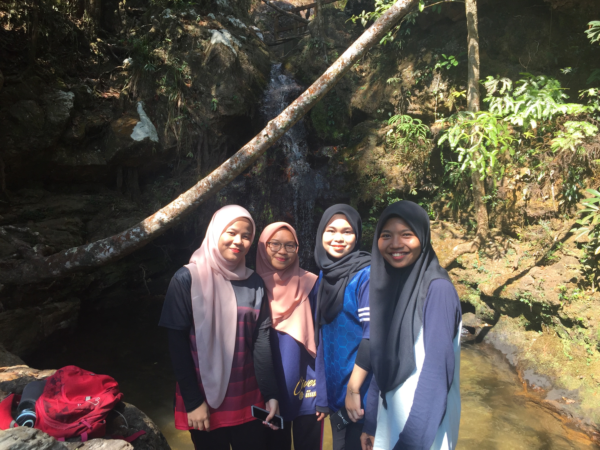
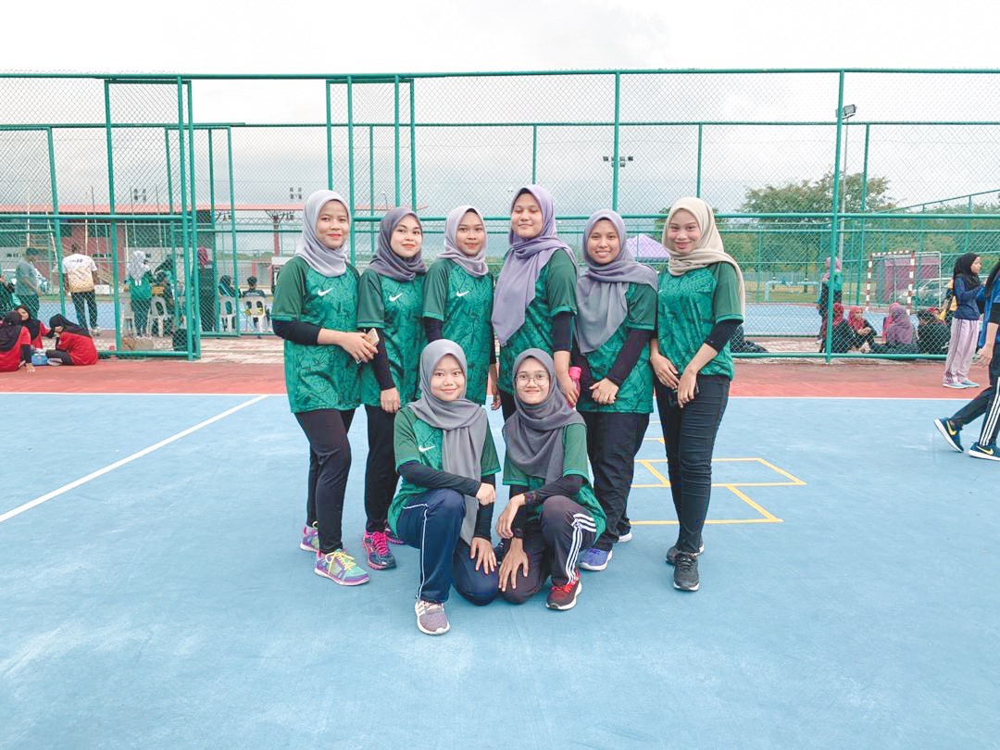

My Experience
My experience during my studies at UiTM Kedah is on semester 2, my friend and I went to Perlis and Padang Besar just to released our stress before an exam. The best thing about our trip is we just plan for it on one night, and the next day we rent a car after that continue our juorney to Perlis. We had a lot of fun together and it also my first time drive that far, it was a great experience for us.
Another great experience is during semester 3 my friend and I go hiking at Mount Jerai. It is best experiece for me sincs it was my first time been on hiking. It was very tiring but worth it as we success to hiking to the top and get to enjoy the beautiful scenery.That was our best moment where we get to spent quality time together
When I was on semester 4, my friend and i joined the futsal tournament that was conducted by college at UiTM Kedah. It was somethingnew for me as we never play it before. I had a great time with my friends training together, and even I got injured during the game but it was something that I will never forget. All the experience that I going through has learn me to appreciate all the good times while we can.
NADHIRAH
Welcome to my website, Hai my name is Nur Nadhirah Binti Mohamad Sarbani. In here i will share about myself and my family. I have 5 siblings which is 1 brother, 1 sister and 2 younger sisters while I'm the middle child. I am a student of UiTM Kedah and I was in my final year which is semester 5. I learned in course Information Management
| NAME | Nur Nadhirah Binti Mohamad Sarbani |
| AGE | 20 Years old |
| DATE OF BIRTH | 13 January 2000 |
| PLACE OF BIRTH | HUSM Kubang Kerian, Kelantan |
| PLACED LIVED | Rawang, Selangor |
Photo at Perlis
Photo at Mount Jerai
Photo during Futsal Game